In the spirit of George Orwell's 1984, I've been logging my AIM away messages for a while. Now that I have a record of them, I want to use them to see how I spend my time. How much sleep do I really get? Do I work different hours on different days of the week? Do I always wake up after noon on the weekends? (Uh, don't answer that.)
These are recalculated each night at midnight, so what you're seeing is up to date. You can also see the raw data, but it's not very interesting. Instead, check out the graphs. They have pretty colors!
Lengths
Layered Graphs
Average Lengths
Frequencies
24-hour Graphs
7-day Graphs
This shows the total amount of time that has been spent on each away message.
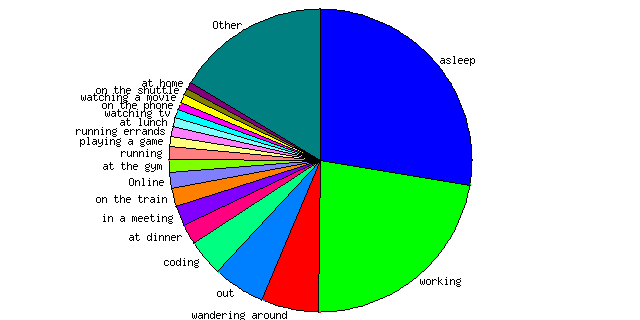You can also see lengths for all away messages.
These are layered graphs, one for weekdays and one for weekends. They show the most common away messages, and when they're used, all in the same graph.
Key: working asleep wandering around out coding
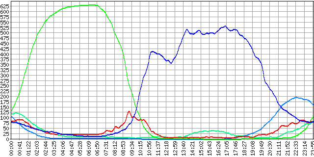Key: asleep wandering around out working coding
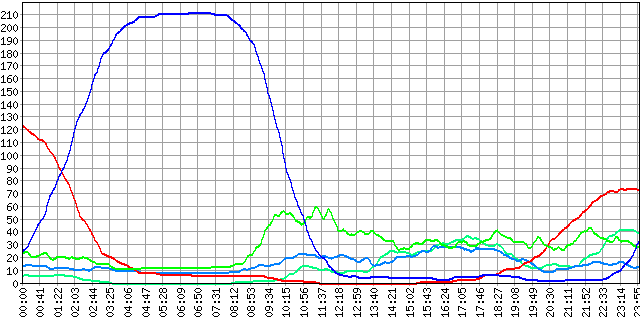This shows the average duration of each of the away messages. The y axis is measured in hours.
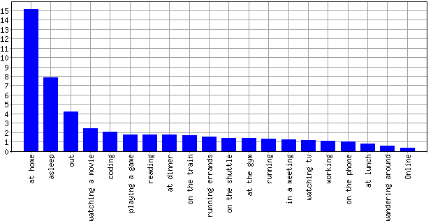You can also see average durations for all away messages.
This shows the frequency of each away message. The y axis shows the number of times that each away message has been turned on.
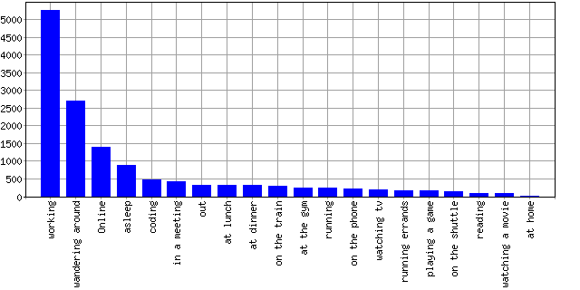You can also see frequencies for all away messages.
These are probability distributions over the 24 hours of the day, one for each away message. They show the times of the day when each away message is most likely to be on. The x axis is the time of day, and the y axis is the number of times that away message has been on at that time of day.
| asleep 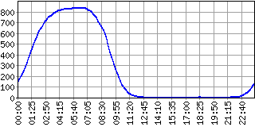 |
working 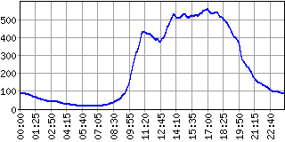 |
| wandering around 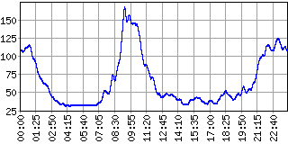 |
out 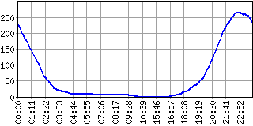 |
| coding 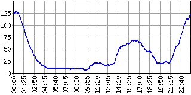 |
at dinner 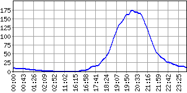 |
| in a meeting 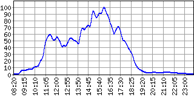 |
on the train 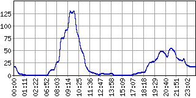 |
| Online 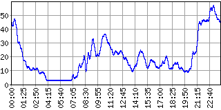 |
at the gym 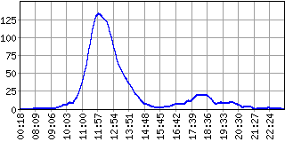 |
| running 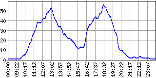 |
playing a game 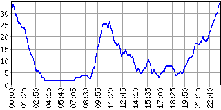 |
| running errands 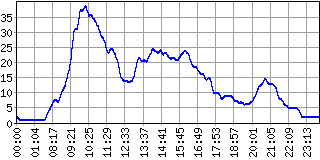 |
at lunch 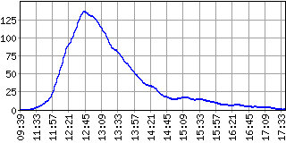 |
| watching tv 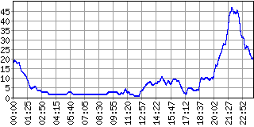 |
on the phone 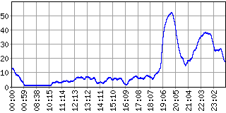 |
| watching a movie 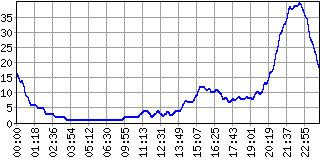 |
on the shuttle 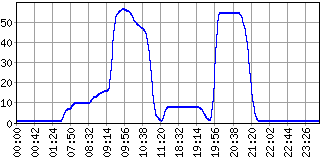 |
| at home 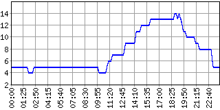 |
reading 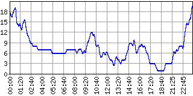 |
These are probability distributions over the 7 days of the week for a few away messages. For each away message, they show on which days of the week that away message is most likely to be on. The x axis is the day of the week, and the y axis is the number of hours the away message has been on during that day.
| asleep 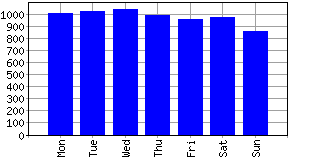 |
working 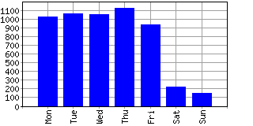 |
| wandering around 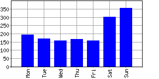 |
out 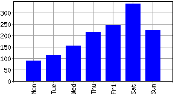 |
| coding 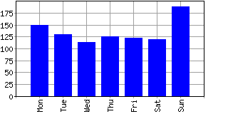 |
at dinner 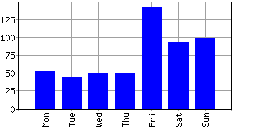 |
Generated by bigbrother 0.5.1.